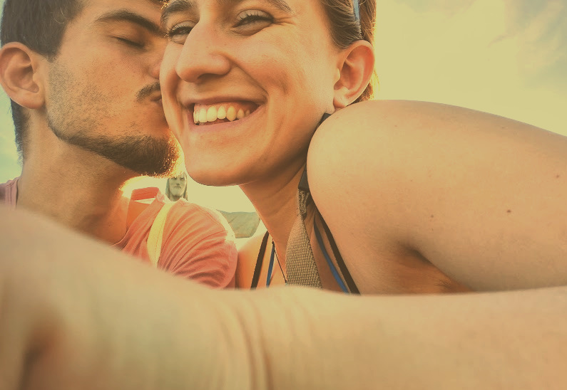
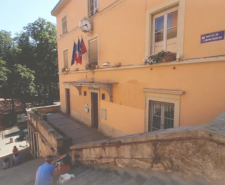
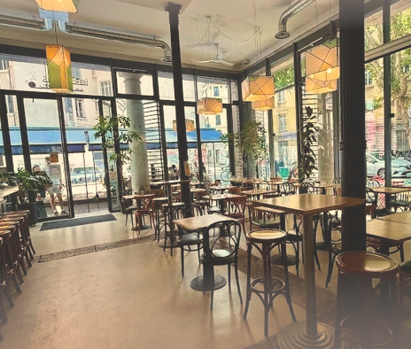
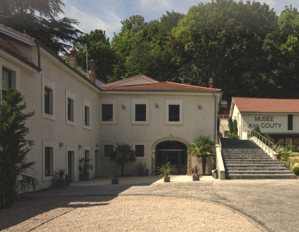
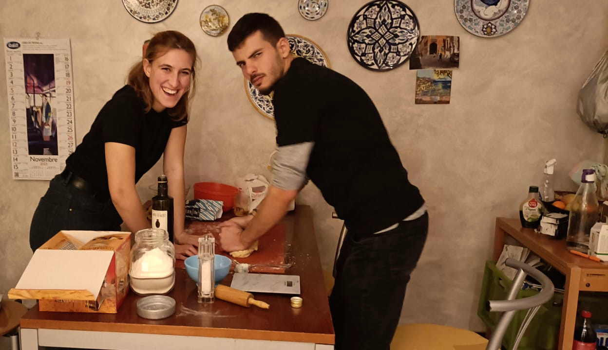
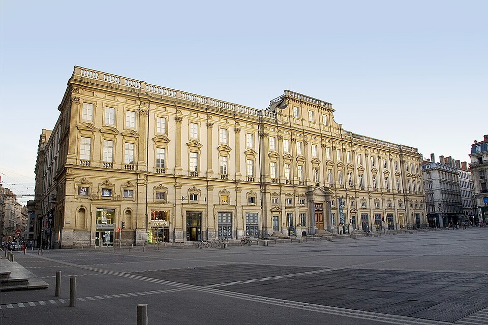
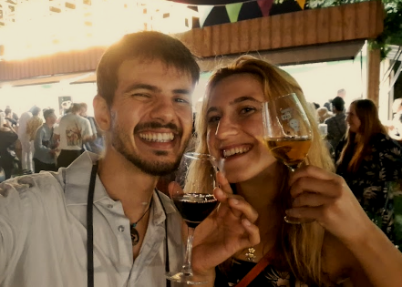

Nous sommes ravis de vous annoncer que nous nous marions le 31 octobre
2026 !
Nous voulons que vous fassiez partie de cette journée si spéciale. Votre présence rendra notre célébration encore plus
mémorable, et nous avons hâte de partager cette journée d'amour avec vous.
Code vestimentaire : élégant !

La cérémonie de mariage aura lieu à la Mairie du 1er Arrondissement de Lyon, située au 2 Pl. Sathonay, 69001 Lyon. La cérémonie commencera à 11 h 00 ; nous vous remercions d'arriver à l'heure pour partager ce moment privilégié avec nous.

Juste après la cérémonie, nous marcherons quelques mètres jusqu'au lieu de l'apéro, où nous prendrons quelques verres et grignoterons afin de célébrer cette journée ensemble. Il aura lieu chez Chez Marti, situé au Pl. Gabriel Rambaud, 69001 Lyon.

Après l'apéro, nous ferons la fête pour célébrer cette journée ensemble. Au programme : des rires, de la musique et de la danse. Nous avons hâte de vous y voir ! Elle aura lieu au Domain d'Ile Barbe, situé au 1 Pl. Henri Barbusse, 69009 Lyon. La fête commence à 17 h 30 et se poursuivra jusqu'à ce que la dernière personne arrête de danser !


D'environ 13 h ou 14 h jusqu'au début de la fête, aucune activité n'est prévue. Profitez-en pour explorer les environs et apprécier l'ambiance ! Voici quelques suggestions (cliquez sur les images pour voir les descriptions) :

Enfilez des chaussures confortables et perdez-vous dans les vieilles rues du Vieux Lyon. Puis rendez-vous au belvédère panoramique caché du Jardin des Curiosités. Découvrez l'histoire de l'ancien Théâtre Romain avant de monter jusqu'à Fourvière pour profiter d'une vue incroyable sur la ville !
Conseil : il y a un funiculaire si vous souhaitez éviter la montée :D !
Montez à bord du TCL bateau Vaporetto pour une promenade relaxante sur le fleuve jusqu'au quartier moderne de Lyon, Confluence. Faites un détour par l'impressionnant Musée des Confluences pour découvrir son architecture futuriste, juste au point de rencontre des deux fleuves !
Conseil : il y a un arrêt du Vaporetto tout près du lieu de l'apéro.
Plongez dans l'art contemporain avec les visites et ateliers de la Biennale de Lyon! Découvrez les installations des anciennes halles ferroviaires des Les Grandes Locos et les expositions avant-gardistes du macLYON.
Explorez des siècles d'art au Musée des Beaux-Arts de Lyon, installé dans une superbe abbaye bénédictine du XVIIe siècle. Le musée se trouve sur la dynamique Place des Terreaux, en plein cœur de la ville ! Prenez aussi le temps de faire une pause dans le paisible jardin de sculptures du musée, au Palais Saint-Pierre.
S'il fait beau, faites une promenade relaxante ou du vélo au bord de l'eau ! Découvrez les agréables pelouses et cafés-bateaux des Berges du Rhône, ou rendez-vous sur les Rives de Saône pour admirer de superbes vues sur le Old Lyon et la célèbre église de basilique de Fourvière.
Avant de nous rejoindre pour prendre un verre, faites une petite promenade autour de Île Barbe! Cette petite île paisible, au milieu de la Saône, regorge d'histoire, de bâtiments anciens en pierre et de la vieille Eglise Notre-Dame. Elle se trouve juste en face de notre lieu de fête : l'endroit parfait pour une promenade paisible avant que la fête ne commence !
Si vous arrivez avant le jour du mariage, ou si vous restez plus longtemps le week-end, Lyon compte de nombreux
restaurants et bars à découvrir. Voici
Voici quelques adresses que nous aimons !
(désolés, il s'agit d'un lien Google Doc, car il est plus facile à mettre à jour)

Nous souhaitons jouer des chansons de mariage traditionnelles de toutes les nationalités représentées parmi nos invités ! Envoyez-nous un message privé avec vos chansons préférées afin que nous puissions les ajouter à la playlist de notre DJ.
Votre présence à nos côtés en cette journée si spéciale est tout ce que nous souhaitons. Si vous désirez
néanmoins nous offrir un cadeau, vous pouvez faire une contribution ici :
Titulaire du compte : VITTORIA GOLLINI
IBAN: FR26 3000 2010 0000 0065 2213 V23
BIC: CRLYFRPP
Préparez-vous à une journée pleine d'amour, de rires et de danse. Nous avons hâte de
vous y voir !
Contact :
+33 6 95 70 38 23 (edu)
+39 346 881 8332 (vi)